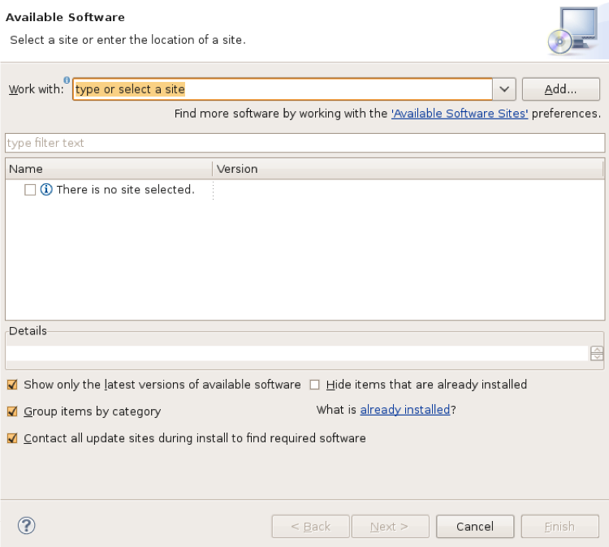
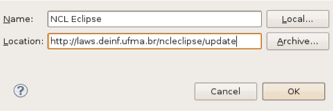
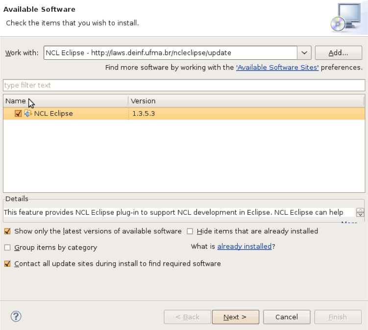
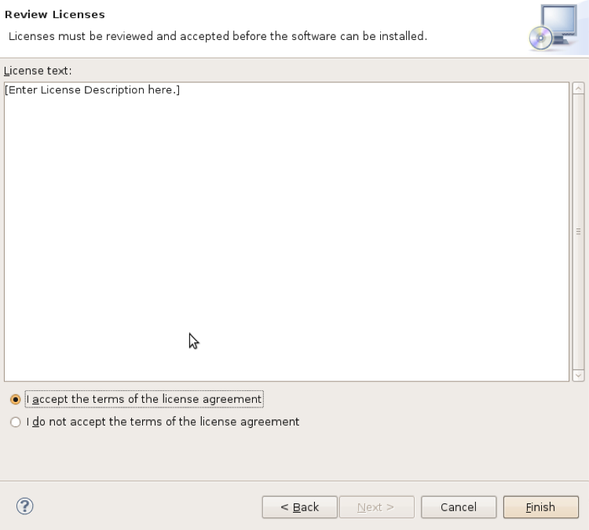
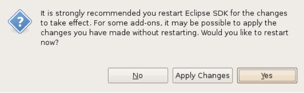

2.1. Instalando manualmente:
2.2. Instalando via update:
A seguinte janela irá aparecer:

Clique no botão "Add..." para inserir o endereço de atualização do NCL Eclipse:

Clique em ok, desmarque a opção "Group items by category" e selecione o plugin:

Clique em "Next" até a janela que irá aparecer os termo de licença, leia e aceite os termos e clique em "Finish":

Depois de baixado e instalado, irá aparecer a janela que pede o reinicio da IDE:
